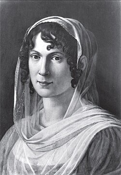

Caroline von Humboldt (1766–1829), geborene von Dacheröden, war eine bedeutende Persönlichkeit der deutschen Kultur- und Geistesgeschichte. Sie wurde in eine wohlhabende und gebildete Familie hineingeboren und erhielt für ihre Zeit eine außergewöhnlich umfassende Bildung.
Caroline von Humboldt war nicht nur die Ehefrau von Wilhelm von Humboldt, sondern auch eine eigenständige, einflussreiche Frau. Sie bewegte sich in den Kreisen der klassischen deutschen Kultur und pflegte enge Kontakte zu wichtigen Persönlichkeiten wie Johann Wolfgang von Goethe und Friedrich Schiller.
Besonders bekannt war sie für ihre geistige Offenheit, ihre Bildung und ihre Rolle als Gastgeberin bedeutender Salons. In diesen gesellschaftlichen Zusammenkünften wurden Ideen aus Kunst, Literatur und Philosophie ausgetauscht. Damit trug sie aktiv zum kulturellen Leben ihrer Zeit bei.
Die Ehe zwischen Caroline und Wilhelm von Humboldt galt als außergewöhnlich modern. Beide führten eine Beziehung, die von gegenseitigem Respekt und intellektuellem Austausch geprägt war. Sie unterstützte ihren Mann in seiner Arbeit und beeinflusste sein Denken, während sie gleichzeitig ihre eigenen Interessen und Kontakte pflegte.
Caroline von Humboldt reiste viel, unter anderem nach Italien, wo sie sich intensiv mit Kunst und Kultur beschäftigte. Ihre Briefe und Aufzeichnungen geben bis heute Einblick in das geistige Leben der damaligen Zeit.
Insgesamt war Caroline von Humboldt weit mehr als „nur“ die Frau eines berühmten Mannes: Sie war eine gebildete, selbstbewusste Frau, die die kulturelle Entwicklung ihrer Epoche aktiv mitgestaltete und bis heute als wichtige Vertreterin der deutschen Klassik gilt.